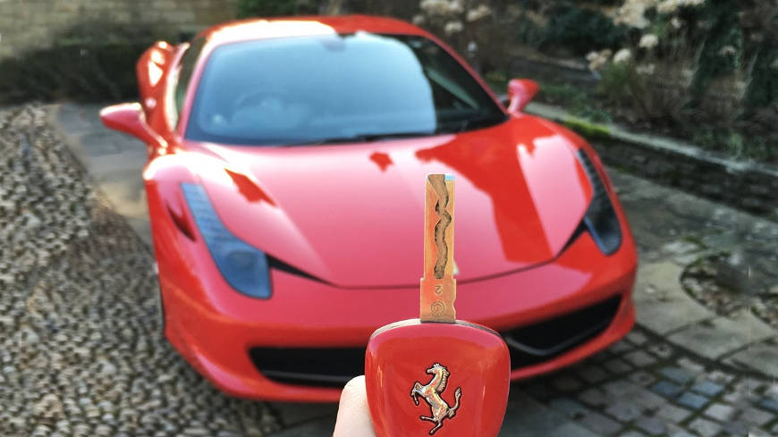
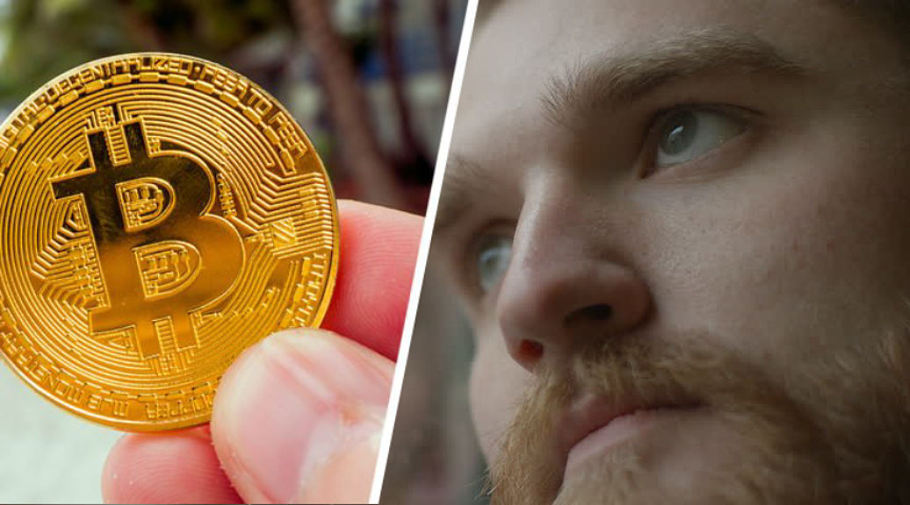

¡Gran
Revelación! Los Secretos Internos Para Generar Al Menos $50.000 Por
Mes desde casa... A Través De Un Sistema De Intercambio de Bitcoin Que Cuesta CASI
Nada Para Inscribirse.
Descubre como un hombre que utilizó este SISTEMA DE INTERCAMBIO DE BITCOIN fue de deber $30.000 a ganar a ganar la ENORME cantidad de $600.000 en tan solo 12 meses. Y este hombre soy yo.
Publicado el 16/06/2020 Por Miguel Sanchez, Tiempos Financieros
Miguel Sanchez, 30, (en la imagen) ha incrementado su riqueza en más de $600.000 gracias a un depósito de $250 que hizo hace más de un año.
Ahora mismo estoy en pleno proceso de buscar mi siguiente Ferrari, pero hace unos años las cosas no iban tan bien para mi. Hace 9 años, estaba asistiendo a un curso barato de inversión en la bolsa. Y no tenía dinero para pagarme un departamento decente. Ahí es cuando empecé a decirme “Este puede ser el peor momento de tu vida, pero tu solo caes tan bajo como tu lo permites.”
Así que he estado trabajando un par de horas extra para seguir mi sueño de ser un experto y crear un nuevo sistema que ayudaría a la gente a ganar DINERO EXTRA con MENOS ESFUERZO. Y entonces tuvo lugar la explosión de bitcoin, así que pensé que crearía una plataforma para negociar con CRIPTOMONEDAS.
TAMBIÉN TE PUEDE INTERESAR
Al mismo tiempo, mientras sigo en búsqueda de mi
nuevo auto, creo que debería decirles que he hecho más de $600.000 en
los últimos 12 meses con mi sistema de comercio de bitcoins, así que
pensé que ustedes también estarían interesados en usarlos.
Intentar descubrir que es lo que realmente genera dinero en internet puede ser una verdadera pesadilla con la gran cantidad gente que te puede hacer ganar un millón de dolares desde cero. Estoy seguro que tu también los has visto y nadie te culparía por mirarlos con ojos críticos.
Peor, la verdad es que... algunas personas están haciendo verdaderas fortunas trabajando en internet sin que nadie se entere. Y la gran pregunta es... ¿CÓMO lo hacen?

Un inversor afortunado nos dice “Antes nunca hubiese imaginado esto, pero ahora parece que al fin he ganado la libertad con la que siempre soñé”
Bueno, en los siguientes minutos lo descubriras.
 Pero
antes de que revele MIS ESTRATEGIAS SECRETAS tomate un momento para
imaginarte cuan diferente sería tu vida si tuvieras millones en el banco
¡Imagina lo que podrías hacer con $50.000 por mes!
Pero
antes de que revele MIS ESTRATEGIAS SECRETAS tomate un momento para
imaginarte cuan diferente sería tu vida si tuvieras millones en el banco
¡Imagina lo que podrías hacer con $50.000 por mes!
✔ Primero... Imagina lo que sería no tener ninguna deuda. Ni de tarjetas de crédito ni de prestamos.
✔ Luego... Imagínate manejando el auto de tu elección. Un auto de alta gama y de última generación.
✔ Imagínate en la casa de tu elección y que ni siquiera tengas una hipoteca.
✔ Imagínate de vacaciones. Con
$50.000 por mes, la vida se sentirá como unas largas vacaciones.
Podrías estar disfrutando un crucero por el mundo o sentado junto a la
piscina en un lujoso hotel en alguna parte del mediterráneo.
✔ Imagína no tener un jefe.
✔ Imagina poder pasar más tiempo con tu familia, o haciendo ese hobby que te encanta.
El punto es que... podrías estar haciendo cualquier cosa que quisieras. Eso es lo que hace el DINERO... Te compra la LIBERTAD de elegir como quieres vivir tu vida.
Nunca
Antes Había Habido Un Mejor Momento Para Hacer Una Pequeña Inversión
Que Garantice Darte Todas Las Riquezas Que Te Mereces.
Si el dinero compra la libertad, ¿como puedo conseguir más?
¿Pedirle un aumento a tu jefe? No hay manera de que eso suceda
¿Ganar la lotería? Bueno, solo si eres lo suficientemente suertudo.
Hay una sola manera de volverse rico y es invertir dinero en BITCOIN. Las criptomonedas son el FUTURO del DINERO. Pero la mejor parte de esta inversión es que puedes empezar con ella en tu tiempo libre, así no tienes que abandonar tu trabajo actual repentinamente. Ahora, puede ser que estes pensando... ¿Pero invertir no significa que tienes que ser un experto en inversiones? ¡NO!
Invertir con mi Sistema de Intercambio de Bitcoin es más Sencillo de lo que Puede Parecer... Y la mejor parte es...

Miguel ha ganado mucho con bitcoin. Fotografo: Santiago De Laurentis/FilMagic
✔ No necesitas ser un experto
✔ No necesitas una gran cantidad de tiempo
✔ Y definitivamente no necesitas una gran cantidad de dinero
Escribí este artículo porque, bueno, soy un chico al que le encantan las criptomonedas. Nada me entusiasma más que ver más gente invertir en CRIPTO y que obtengan una oportunidad real de hacer más dinera para conseguir la libertad de elegir como quieren vivir sus vidas. Uno de mis mayores objetivos es enseñarle a la gente las estrategias para invertir en criptomonedas que sean LEGÍTIMAS y MENOS RIESGOSAS.
¿De verdad crees que hay una gran diferencia entre ti y todos esos millonarios de bitcoin? No la hay. Ellos trabajaron duro y fueron en búsqueda de lo que querían - y TÚ TAMBIÉN PUEDES. Todo tiene que ver con tu forma de pensar. Cambia la tuya. Utiliza tu nueva forma de pensar para aplicar el tiempo que inviertes en ti mismo en invertir en el mercado y hacer crecer tus cuentas bancarias de pequeñas a enormes. Tu propio auto de lujo y la casa de tus sueños estarán esperandote.
ÚLTIMAS NOTICIAS
Fuentes confiables me han informado que debido a su extrema popularidad, nuestro sistema no continuará con su descuento actual. Al momento de escribir este artículo, quedan tan solo 94 puestos libres así que CONSIGUE TU LUGAR HOY.
CANTIDAD HECHA CON BTC HOY
$523.180,00
 GUARDAR MI LUGAR
GUARDAR MI LUGAR